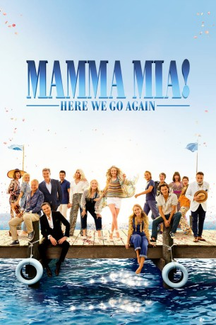

#9936 Mamma Mia! Here We Go Again
 gesehen am 19.01.2019
gesehen am 19.01.2019
 
 IMDB-Wertung: 7.0 / 10
IMDB-Wertung: 7.0 / 10  Tomatometer: 80
Tomatometer: 80  Metascore: 60
Metascore: 60 
Sophie die in „Mamma Mia“ geheiratet und zu diesem Anlass ihre Familie um Mutter Donna und das Männer-Trio Sam Harry und Bill, die allesamt als ihr leiblicher Vater in Frage kamen, auf die griechische Insel Kalokairi eingeladen hatte, ist schwanger! Zur Unterstützung lädt sie nun Rosie und Tanya ein – doch bevor es zum großen musikreichen Finale kommt, das sich auch Sophies Großmutter nicht entgehen lässt, erzählen die der werdenden Mutter zunächst noch Geschichten aus den wilden 1970er Jahren, als Donna unter der Sonne Griechenlands Sam, Harry und Bill kennenlernte.
Jahr: 2018
Dauer: 113 Minuten
FSK: 0
Land: England Studio: UPITonspuren: DD5.1 - ,
Untertitel: Deutsch,
Auflösung: 1080p (1920x800) Größe: 7751 MB
Genre: Komödie, Liebe, Musical
Regisseur: Ol Parker
Drehbuch: Ol Parker, Richard Curtis, Ol Parker, Catherine Johnson, Catherine Johnson
Soundtrack: Benny Andersson, Anne Dudley, Björn Ulvaeus
Darsteller:
 Amanda Seyfried als Sophie
Amanda Seyfried als Sophie Andy Garcia als Fernando Cienfuegos
Andy Garcia als Fernando Cienfuegos Celia Imrie als Vice Chancellor
Celia Imrie als Vice Chancellor Lily James als Young Donna
Lily James als Young Donna- Alexa Davies als Young Rosie
- Jessica Keenan Wynn als Young Tanya
 Dominic Cooper als Sky
Dominic Cooper als Sky Julie Walters als Rosie
Julie Walters als Rosie Christine Baranski als Tanya
Christine Baranski als Tanya Hugh Skinner als Young Harry
Hugh Skinner als Young Harry Pierce Brosnan als Sam
Pierce Brosnan als Sam Omid Djalili als Greek Official
Omid Djalili als Greek Official- Josh Dylan als Young Bill
 Gerard Monaco als Alexio
Gerard Monaco als Alexio- Anna Antoniades als Apollonia
 Jeremy Irvine als Young Sam
Jeremy Irvine als Young Sam- Panos Mouzourakis als Lazaros
 Maria Vacratsis als Sofia
Maria Vacratsis als Sofia Naoko Mori als Yumiko
Naoko Mori als Yumiko Togo Igawa als Mr. Tatyama
Togo Igawa als Mr. Tatyama Colin Firth als Harry
Colin Firth als Harry Anastasia Hille als Dr. Inge Horvath
Anastasia Hille als Dr. Inge Horvath Stellan Skarsgård als Bill / Kurt
Stellan Skarsgård als Bill / Kurt- Susanne Barklund als Alma
 Cher als Ruby Sheridan
Cher als Ruby Sheridan- Jonathan Goldsmith als Brother Cienfuegos
 Meryl Streep als Donna
Meryl Streep als Donna- Kathryn Akin als Ensemble Performer
- Dale Branston als Ensemble Performer
 Cassie Clare als Ensemble Performer
Cassie Clare als Ensemble Performer- Leon Cooke als Ensemble Performer
- Sonia Dorado als Ensemble Performer
 Jane Fowler als Ensemble Performer
Jane Fowler als Ensemble Performer- Adam Galbraith als Ensemble Performer
 Jenny Galloway als Ensemble Performer
Jenny Galloway als Ensemble Performer- Sharon Gomez als Ensemble Performer
- Alim Jayda als Ensemble Performer
- Craig Anthony-Kelly als Ensemble Performer
 Myra McFadyen als Ensemble Performer
Myra McFadyen als Ensemble Performer- Marianna Neofitou als Ensemble Performer
- Tom Oakley als Ensemble Performer
- Amy Trigg als Ensemble Performer
- Tim Wallers als Ensemble Performer
- Beth Willetts als Ensemble Performer
- Benny Andersson als Cafe Pianist (uncredited)
- Filiz Fairweather als Fisher Woman (uncredited)
- Paul-Adrien Ferré als French Lover (uncredited)
- Alexandra Ford als Head Girl (uncredited)
- David Handley als Literary Guest (uncredited)
 Lampros Kalfuntzos als Fisherman (uncredited)
Lampros Kalfuntzos als Fisherman (uncredited)
Datei: X:\2-Dilogie(G-M)\Mamma Mia\Mamma Mia! Here We Go Again (2018, FSK0, 1920x800).mkv seit 14.11.2018
Festplatte: HD Collection-2(A-Z)-3(A-M)
 Alle Filme aus Gruppe '2-Dilogie(G-M)\Mamma Mia'
Alle Filme aus Gruppe '2-Dilogie(G-M)\Mamma Mia'
- Mamma Mia!
- Mamma Mia! Here We Go Again (der aktuelle Film)